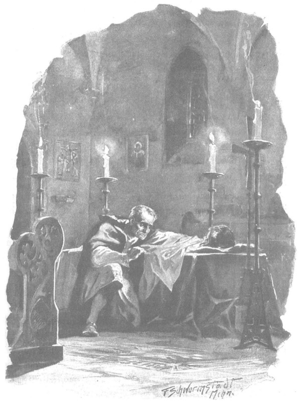

Lão hiệp sĩ Zygfryd de Lӧwe định lên đường đến thành Malborg thì vừa hay, một gia nhân chạy thư đột ngột mang đến cho lão bức thư của Rotgier gửi về từ cung đình công quốc Mazowsze.
Tin ấy khiến lão hiệp sĩ Thánh chiến cao tuổi xúc động tận đáy lòng. Trước hết, qua thư có thể thấy rằng Rotgier đã trình bày và dẫn dắt chuyện hiệp sĩ Jurand một cách tuyệt vời trước quận công Janusz. Lão Zygfryd mỉm cười khi đọc thấy Rotgier còn đòi quận công phải bồi thường cho Giáo đoàn những thiệt hại vừa rồi, và phải trao điền trang Spychow cho các hiệp sĩ Thánh chiến. Nhưng phần sau của bức thư mang những tin tức bất ngờ và bất lợi. Rotgier báo tin rằng để chứng tỏ rõ ràng hơn sự vô can của Giáo đoàn trong việc bắt cóc Jurandówna, hắn đã ném găng tay cho các hiệp sĩ xứ Mazowsze, thách bất cứ ai nghi ngờ điều đó cùng hắn bước ra tòa phán xử của Chúa, nghĩa là tỷ thí trước mặt triều đình… “Không kẻ nào dám nhặt găng tay lên”. Rotgier viết tiếp, “bởi mọi người đều biết bức thư của chính lão Jurand đã bênh vực chúng ta, bọn chúng e sợ sự phán xử của Chúa. Ấy vậy mà tự nhiên lại xuất hiện một thằng oắt con - cái thằng mà chúng ta đã từng gặp tại lâm cung - dám chấp nhận lời thách đấu. Vì lý do đó, xin ngài, thưa đồng đạo anh minh và thánh thiện, chớ ngạc nhiên là tôi sẽ về chậm đôi ba ngày, bởi lẽ với tư cách người thách đấu tôi buộc phải ở lại chiến đấu. Việc này tôi hành động vì thanh danh Giáo đoàn, nên hy vọng rằng cả đại thống lĩnh lẫn ngài - người mà tôi ngưỡng mộ và mến yêu với trái tim của một đứa con - không nỡ trách cứ. Đối thủ của tôi hầu như vẫn còn trẻ con, mà như ngài đã biết, chuyện đánh đấm đối với tôi chẳng phải là điều gì mới mẻ. Do vậy, chắc chắn tôi sẽ khiến cho máu hắn phải đổ ra để ca ngợi thanh danh Giáo đoàn, nhất là khi tôi được Chúa Ki-tô trợ giúp, bởi hẳn Người thương yêu những kẻ mang thánh giá của Người hơn một tên Jurand vớ vẩn hoặc một con bé oặt ẹo nào đó của dân mọi rợ Mazowsze!”
Lão Zygfryd ngạc nhiên trước hết bởi tin Jurandówna đã có chồng. Cứ nghĩ đến việc trang Spychow có thể sẽ lại xuất hiện một kẻ thù dữ tợn và đầy hằn thù mới, lão lãnh binh già đã thấy lòng lo lắng. “Dĩ nhiên,” lão tự nhủ, “hắn sẽ không thôi trả thù, nhất là một khi hắn cướp lại được con bé kia, và nghe nó nói rằng chính chúng ta đã bắt cóc nó từ lâm cung! Ha, khi ấy mọi chuyện sẽ lộ hết, là chúng ta mời lão Jurand tới đây chỉ để giết lão, chứ không ai nghĩ đến chuyện trả con gái cho lão cả.”
Nghĩ đến đây, Zygfryd chợt đoán rằng sau những bức thư của quận công, hẳn đại thống lĩnh sẽ cho lục soát thành Szczytno, chí ít cũng để đẹp mặt với quận công. Bởi lẽ đại thống lĩnh và hội đồng thánh giáo đang lo giữ gìn quan hệ, để nếu cuộc đại chiến với đức vua Ba Lan hùng mạnh nổ ra, các quận công Mazowsze sẽ đứng ngoài cuộc. Trước các lực lượng không xoàng của giới lãnh chúa quý tộc Mazowsze, trước khả năng chinh chiến đáng nể của họ, chớ nên xem thường hay bỏ qua lực lượng của các quận công. Hòa hiếu với họ sẽ giữ yên được cả một vùng biên giới rất dài, cho phép Giáo đoàn tập trung tốt hơn lực lượng của mình. Đã bao lần ở thành Malborg người ta bàn bạc việc đó trước mặt Zygfiyd, đã bao lần người ta vui sướng bởi hy vọng là sau khi chiến thắng vua Ba Lan, họ sẽ tìm một cái cớ vớ vẩn nào đó để chống lại Mazowsze, và khi ấy sẽ không còn một sức mạnh nào có thể giằng được đất nước này ra khỏi tay các hiệp sĩ Thánh chiến. Đó là một tính toán đại cuộc chắc chắn, và vì thế, cũng chắc chắn là lúc này đại thống lĩnh sẽ làm tất cả để khỏi mất lòng quận công Janusz, bởi lẽ vị ấy kết hôn với con gái của cựu đại quận công Kiejstut, khó lấy lòng hơn nhiều so với quận công Ziemowit xứ Plock - người có bà vợ không hiểu sao lại hết lòng gắn bó với Giáo đoàn.
Nghĩ thế, lão hiệp sĩ Zygfryd - kẻ tuy rất sẵn sàng thực hiện những hành động tội ác, phản trắc và dã man, song lại yêu mến Giáo đoàn và áng quang vinh của Giáo đoàn hơn mọi thứ khác trên đời - bắt đầu tính toán lại trong lòng. Hay tốt hơn cả là thả ông Jurand và con gái ông ta ra? Nếu vậy thì toàn bộ sự phản trắc và lừa lọc ghê gớm sẽ bị phơi trần, nhưng chỉ làm vấy bẩn tên tuổi của gã Danveld thôi, mà gã thì không còn nữa. “Dù đại thống lĩnh có nghiêm khắc xử phạt ta và Rotgier vì đã đồng lõa với việc làm của Danveld,” lão nghĩ bụng, “thì việc đó cũng vẫn tốt hơn cho Giáo đoàn!” Nhưng nghĩ tới đây, con tim đầy thù hằn và ác độc của lão bắt đầu sôi sục chống lại ông Jurand.
“Lẽ nào ta phải thả hắn, tên đao phủ có bàn tay sắt dối với biết bao con dân của Giáo đoàn, kẻ đã thắng ngần ấy cuộc đọ sức, đã gây ra bao thất bại và nhục nhã, kẻ đã đánh gục rồi giết chết Danveld, đã thắng de Bergow, đã giết Majneger, giết Gotfryd và Hugues, kẻ mà chỉ riêng ở thành Szczytno thôi cũng đã khiến cho bao dòng máu Đức đổ ra, nhiều hơn hẳn một cuộc đụng độ lớn thời chiến?”
“Ta không thể! Không thể!” Zygfryd thầm nhắc đi nhắc lại trong lòng. Chỉ mới nghĩ đến điều ấy thôi, những ngón tay hiếu sát của lão đã co quắp cả lại, và bộ ngực già nua đã thấy khó nhọc, phải hớp hớp không khí.
“Thế nhưng nếu điều đó gắn liền với lợi ích lớn lao và danh dự Giáo đoàn thì sao? Nếu như hình phạt dành cho những kẻ gây tội ác còn đang sống có thể lấy lòng quận công Janusz vẫn thù địch trước nay, khiến ông ta đồng ý ký hòa ước hay trở thành đồng minh?… Bọn chúng tuy nóng tính, - viên lãnh binh già nghĩ thầm, - nhưng chỉ cần đối xử tốt đôi chút là chúng dễ dàng quên đi những điều xúc phạm. Thì chính quận công Janusz chẳng đã bị bắt ngay trên đất đai của mình, nhưng sau đó ông ta đâu có ra mặt trả thù…”
Nghĩ đến đấy, lòng rất đỗi phân vân, lão bắt đầu đi đi lại lại trong phòng. Đột nhiên, lão tưởng như nghe thấy một giọng nói nào từ trên cao vọng xuống:
- Hãy khoan, hãy đợi Rotgier trở về!
Phải! Đợi đã! Chắc Rotgier sẽ mau chóng giết chết thằng oắt kia thôi, sau đó hoặc ta phải tìm cách giấu đi lão Jurand và con gái của lão, hoặc đem trao trả. Nếu theo cách thứ nhất, tuy quận công không quên, nhưng cũng không biết chắc kẻ nào đã bắt cóc cô gái, ông ta sẽ phải tìm, sẽ gửi thư đến cho đại thống lĩnh, không phải để kết tội mà để căn vặn - và sự việc có thể kéo dài miên man. Còn nếu theo cách thứ hai, niềm vui sướng khi thấy Jurandówna trở về sẽ lớn hơn ý muốn báo thù việc bắt cóc cô gái. “Dẫu sao, lúc nào ta cũng vẫn có thể bảo rằng chúng ta tìm thấy con bé sau khi lão Jurand gây ra cuộc náo loạn kia mà!” Ý nghĩ sau rốt khiến lão Zygfryd hoàn toàn yên tâm.
Còn về ông Jurand, đã từ lâu lão cùng Rotgier nghĩ ra một cách, để nếu có phải thả ông ra thì ông cũng không còn khả năng trả thù hay kêu kiện nữa. Zygfryd thấy lòng khoan khoái khi nghĩ đến phương kế kia. Lão cũng phấn chấn khi nghĩ về tòa phán xử của Chúa sẽ được tổ chức tại lâu đài Ciechanow. Lão không hề mảy may lo lắng về kết quả của cuộc chiến đấu sinh tử kia. Lão nhớ lại một hội võ ở Krulewiec, nơi một mình Rotgier đã hạ liền hai đối thủ vốn là những hiệp sĩ lừng danh, từng được coi là các võ sĩ vô địch tại quê hương Andegawen của họ. Lão cũng nhớ đến trận chiến đấu ở chân thành Wilno với một hiệp sĩ Ba Lan, một võ tướng của hiệp sĩ Spytko xứ Melsztyn, người cũng đã bị Rotgier giết chết. Và mặt lão rạng rỡ, trái tim lão tràn dâng niềm tự hào, bởi chính lão là người đầu tiên hướng dẫn Rotgier - lúc đó đã là một hiệp sĩ lẫy lừng danh tiếng - đưa hắn vào những cuộc hành binh tiến đánh Litva, đã dạy cho hắn phương cách hữu hiệu nhất để chiến đấu với dân tộc ấy. Lúc này đây, đứa con yêu của lão sẽ lại một lần nữa làm dòng máu Ba Lan đáng nguyền rủa kia tuôn chảy, và nó sẽ trở về trong ánh vinh quang. Đây là tòa phán xử của Chúa, vì thế cả Giáo đoàn cũng sẽ được gột khỏi những mối ngờ vực… “Tòa phán xử của Chúa!”… Trong chớp mắt, trái tim già nua của lão chợt thắt lại bởi một cảm giác gì đó giống như nỗi kinh hoàng. A, Rotgier đang bước vào một trận đấu sinh tử để bảo vệ cho sự vô tội của Giáo đoàn, trong khi thực ra chúng có tội, nghĩa là Rotgier sẽ chiến đấu bảo vệ sự dối trá… Không lẽ đã xảy ra điều bất hạnh ư? Song chỉ lát sau, lão Zygfryd lại cảm thấy điều đó vô lý. Rotgier không thể thua.
Tự làm yên lòng mình như thế, lão hiệp sĩ Thánh chiến cao tuổi bèn nghĩ đến việc có nên đưa Danusia tới một tòa thành xa xôi nào đó, không thể bị dân Mazury tấn công. Nhưng sau hồi lâu cân nhắc, lão gạt bỏ ý định ấy. Suy tính vạch kế hoạch và cầm đầu cuộc tiến công chỉ có thể là thằng oắt con chồng của Jurandówna, mà hắn thì chắc chắn sẽ chết dưới tay Rotgier… Sau này sẽ chỉ có những cuộc điều tra từ phía quận công và quận chúa, sẽ xét hỏi, sẽ thư từ, sẽ kiến nghị, nhưng chính những việc đó sẽ khiến cho sự vụ bị mờ mịt và nhòa nhạt dần đi, chưa nói đến chuyện có thể lần lữa kéo dài triền miên. “Trước khi có thể rút ra được kết luận gì,” lão Zygfryd tự nhủ, “chắc là mình đã chết rồi, còn Jurandówna có lẽ cũng đã trở nên già khụ trong nhà giam của Giáo đoàn.” Tuy nhiên, lão cũng ra lệnh cho binh lính trong thành chuẩn bị sẵn sàng mọi việc để tự vệ và lên đường, bởi lão cũng chưa rõ cuộc bàn bạc sắp tới với Rotgier sẽ đem lại quyết định ra sao. Và lão đợi.
Trong khi đó đã hai, ba rồi bốn ngày trôi qua kể từ thời hạn Rotgier hẹn sẽ trở về, nhưng vẫn chưa thấy đoàn người ngựa nào xuất hiện trước cổng thành Szczytno. Mãi đến ngày thứ năm, lúc trời gần tối, mới có tiếng tù và rúc vang trước chòi canh của người gác cổng. Vừa mới kết thúc những công việc buổi chiều, Zygfryd liền phái ngay một tên võ đồng ra hỏi xem ai đến.
Lát sau hắn quay về, vẻ mặt bối rối, song Zygfryd không thể nhận thấy điều đó vì căn phòng chỉ có ánh lửa cháy trong lò sưởi, không đủ soi tỏ bóng tối.
- Họ về rồi phải không? - Vị lão hiệp sĩ hỏi.
- Thưa vâng! - Tên võ đồng đáp.
Trong giọng nói của hắn có điều gì đó chợt khiến lão hiệp sĩ Thánh chiến lo lắng, lão hỏi:
- Còn đồng đạo Rotgier?
- Đồng đạo Rotgier đã được đưa về.
Nghe thấy thế, Zygfryd nhổm dậy khỏi chiếc ghế đang ngồi. Suốt một lúc lâu lão vẫn bám chặt tay vào tay ghế như sợ ngã, mãi sau lão mới thốt lên bằng giọng cố kìm nén:
- Đưa áo khoác cho ta.
Võ đồng quàng áo lên vai lão, còn lão hình như đã lấy lại sức, tự tay đội mũ choàng lên đầu rồi bước ra khỏi phòng.
Lát sau, lão đã có mặt trên sân, nơi bóng tối hoàn toàn đen đặc, lão bước những bước chân chậm rãi trên mặt tuyết kêu rin rít, tiến lại phía đoàn người ngựa vừa vượt qua cổng thành, rồi dừng lại cạnh đó. Một đám đông người đã tụ tập lại, vài ngọn đuốc bập bùng do bọn lính gác thành vừa kịp mang tới. Nhìn thấy vị hiệp sĩ cao tuổi, bọn bộ binh vội dãn ra, nhưng trong ánh đuốc bập bùng vẫn thấy những bộ mặt kinh hoàng và nghe những tiếng thì thầm khe khẽ:
- Đồng đạo Rotgier…
- Đồng đạo Rotgier bị giết…
Zygfryd nhích lại gần chiếc xe trượt, nơi có cái xác người phủ manh áo choàng đặt nằm trên lớp rơm lót, rồi lão nhấc một đầu áo lên.
- Dịch gần đuốc lại đây. - Lão gạt chiếc mũ choàng, bảo quân lính.
Một tên lính nghiêng ngọn đuốc xuống. Trong ánh đuốc, lão hiệp sĩ Thánh chiến trông thấy đầu Rotgier với khuôn mặt trắng nhợt như màu tuyết, đã bị lạnh cóng, quanh đầu buộc một chiếc khăn đen thắt nút dưới cằm để giữ miệng khỏi bị há ra. Không hiểu sao cả bộ mặt của hắn như dài thõng ra, biến đổi đến nỗi có thể tưởng rằng người nằm đó là một kẻ khác. Mi mắt hắn đã nhắm chặt, chung quanh mắt và thái dương có những đám xanh xanh. Băng đóng thành lớp cứng như thủy tinh trên gò má.
Trong bầu không khí im lặng của mọi người, viên lãnh binh sững lặng nhìn suốt một hồi lâu. Những kẻ khác thì nhìn lão, bởi họ biết lão như cha đẻ của người vừa qua đời, rất yêu thương con người ấy. Không một giọt lệ ứa ra từ đôi mắt lão, vẻ mặt lão chỉ càng trở nên khắc nghiệt hơn ngày thường, dường như chứa dựng một nỗi bình tĩnh đã đông cứng lại.
- Chúng nó để thằng bé nằm thế này mà gửi về đây! - Mãi sau lão mới thốt lên mấy tiếng, rồi quay lại bảo viên quản lý thành. - Trước nửa đêm phải đóng xong quan tài và đưa xác vào nhà nguyện.
- Thưa, vẫn còn lại một chiếc áo quan hôm nọ làm cho những người bị tên Jurand giết chết, - viên quản lý nói, - để tôi ra lệnh lót thêm dạ vào trong.
- Và nhớ phủ áo choàng cho nó, - Zygfryd vừa che mặt Rotgier lại vừa nói thêm, - không phải áo này, áo choàng của Giáo đoàn ấy.
Rồi lát sau lão nhắc:
- Khoan hãy đóng nắp.
Mọi người tiến lại gần cỗ xe. Zygfryd lại chụp mũ choàng lên đầu, nhưng hẳn lại sực nhớ ra điều gì trước khi bước đi, lão hỏi:
- Còn Van Krist đâu?
- Cũng bị giết ạ, - một võ đồng đáp, - nhưng người ta đã phải chôn anh ấy ở Ciechanow, vì xác bắt đầu trương rồi.
- Vậy cũng hay.
Nói đoạn, lão bỏ đi bằng những bước chân chậm chạp. Trở về phòng, lão lại ngồi vào chiếc ghế vừa ngồi lúc mới nhận được tin báo, và lão cứ ngồi lặng như thế, vẻ mặt như hóa đá, lâu đến nỗi gã võ đồng đâm lo, chốc chốc lại thò đầu qua cửa ngó vào. Những giờ đêm nối nhau trôi đi, sự chộn rộn thường ngày trong thành dần ắng lại, riêng phía khám thờ vẳng lại tiếng búa gõ khắc khoải trầm đục, để rồi sau đó không còn có gì khuấy động sự tĩnh lặng của đêm, trừ tiếng những người lính canh gọi nhau.
Gần nửa đêm, lão hiệp sĩ già bỗng chợt bừng tỉnh như vừa thoát khỏi cơn mơ, lão gọi võ đồng.
- Đồng đạo Rotgier đâu rồi? - Lão hỏi.
Bàng hoàng trước biến cố, trước bầu không khí quá tình lặng và một đêm mất ngủ, tên võ đồng dường như không hiểu câu hỏi, nhìn lão chàm chằm với vẻ kinh hoảng, rồi run run đáp lại:
- Con không biết, thưa ngài!…
Nhưng lão hiệp sĩ già đã mỉm một nụ cười đau đớn, ôn tồn bảo: - Kìa con, ta chỉ muốn hỏi: đã đưa anh ấy vào nhà nguyện chưa?
- Đã đưa rồi ạ, thưa ngài.
- Tốt lắm. Con hãy bảo Diederich mang chìa khóa và đèn soi đến đây cho ta, rồi ở đây chờ tới lúc ta về. Bảo hắn đem cả nồi than hồng đến nữa. Trong nhà nguyện có đèn nến gì không?
- Đã thắp nến dọc theo quan tài rồi ạ.
Zygfryd mặc áo khoác rồi bước ra ngoài.
Bước đến nhà nguyện, lão đứng từ cửa nhìn vào xem có ai trong đó không, rồi đóng cửa thật cẩn thận trước khi bước tới gần quan tài, lấy hai trong số sáu cây nến đang cháy bên áo quan cắm lên giá nến bằng đồng to tướng, rồi quỳ xuống.
Môi lão không hề mấp máy, có nghĩa là lão không cầu nguyện. Suốt hồi lâu lão chỉ chăm chăm nhìn mãi vào khuôn mặt đã đông cứng lại nhưng nom vẫn còn xinh trai của Rotgier, dường như muốn cố tìm ở đó chút dấu tích còn lại của sự sống.
Rồi bằng giọng nghẹn ngào, lão khẽ thốt lên giữa bầu không khí lạnh tanh của nhà nguyện:
- Con ta! Con ta ơi!
Rồi lão lại nín lặng. Dường như lão đang chờ được nghe lời đáp.
Tiếp đó, lão thò bàn tay với những ngón gầy guộc nom giống như những chiếc móng vuốt luồn vào dưới tấm áo choàng phủ ngực Rotgier, sờ soạng. Lão tìm khắp, ở giữa ngực rồi hai bên sườn, dưới xương sườn và dọc xương bả vai, rốt cuộc qua lần da tay lão sờ dọc theo cái khe hở kéo dài từ đỉnh vai phải xuống tận nách, lão ấn sâu những ngón tay xuống, lần suốt chiều dài vết thương, và miệng lão lại lẩm bẩm những lời thì thầm, chứa chất một chút kêu than run rẩy:
- Ô… Ô!… Một nhát chém mới độc địa làm sao!… Thế mà con bảo thằng ấy vẫn còn là con nít!… Xả cả một bên vai! Cả một mảng vai! Đã bao lần con vung tay chống lũ tà đạo để bảo vệ Giáo đoàn, để bây giờ lưỡi rìu Ba Lan bổ toạc cả mảng vai con thế này… Con ơi, thế là hết rồi, hết cả rồi! Người đã không ban phước cho con, có lẽ Người không còn che chở cho Giáo đoàn nữa. Người cũng bỏ rơi cả ta, dù ta đã phụng sự Người bao tháng năm đằng đẵng.
Những lời thở than dứt đoạn, môi lão run run, trong nhà nguyện bầu không khí im lặng câm đặc lại bao trùm.
- Con ta! Con ta ơi!

Suốt hồi lâu lão chỉ chăm chăm nhìn mãi vào khuôn mặt của Rotgier
Giọng lão Zygfryd lúc này như một lời cầu khẩn, lão kêu khẽ hơn, như những người muốn hỏi một điều bí mật nào đó vô cùng khủng khiếp và hết sức quan trọng:
- Nếu con đang ở đây, nếu con nghe thấy lời ta, hãy ra hiệu cho ta biết với: con hãy động đậy bàn tay hoặc hãy mở mi mắt một thoáng thôi cũng được - bởi con tim già nua của ta đang gào thét trong ngực này… Ra hiệu đi con, ta yêu con lắm, con hãy nói đi!…
Rồi chống cả hai tay vào hai mép quan tài, lão dán chặt đôi mắt u ám vào đôi mi đã nhắm nghiền của Rotgier và chờ đợi.
- Ha! Nhưng làm sao con còn nói được nữa! - Mãi sau lão mới thốt lên. - Chỉ còn có khí lạnh và mùi hôi hám toát ra từ người con mà thôi. Nhưng khi con im lặng thì ta sẽ nói điều này, để linh hồn con bay về giữa những ngọn nến đang cháy sáng này mà lắng nghe.
Nói đoạn, lão cúi xuống sát mặt cái xác.
- Con có nhớ việc cha tuyên úy không cho giết Jurand và chúng ta đã thề như thế hay không? Được, ta sẽ thực hiện đúng lời thề mà cũng vẫn làm thỏa lòng con, dù con đang ở nơi đâu đi nữa.
Dứt lời, lão lùi khỏi quan tài, đặt lại những giá cắm nến mà lúc trước lão đã để ra một bên, phủ lại tấm áo choàng lên thân người và che cả mặt của xác chết, rồi bước khỏi nhà nguyện.
Tên võ đồng quá mệt mỏi đã ngủ say bên cửa, còn trong phòng, gã Diederich vẫn đang chờ theo lệnh của Zygfryd.
Đó là một người đàn ông thấp lùn nhưng to ngang, có đôi chân vòng kiềng và bộ mặt chữ điền đầy vẻ thú vật, một phần mặt bị khuất trong chiếc mũ che có diềm cắt răng cưa thõng xuống vai. Gã mặc một chiếc áo kaftan bằng da bò không thuộc, thắt dây lưng cũng bằng da bò có giắt chùm chìa khóa và con dao ngắn. Bên tay phải gã cầm một chiếc đèn soi bằng sắt có màn che, còn tay kia cầm một chiếc nồi nhỏ bằng đồng và bó đuốc.
- Sẵn sàng chưa? - Zygfryd hỏi.
Diederich im lặng cúi đầu.
- Ta đã lệnh mi phải cho than hồng vào nồi kia mà.
Gã đàn ông lùn không nói một lời, chỉ trỏ tay vào những súc gỗ đang cháy rừng rực trong lò sưởi, rồi vớ lấy chiếc xẻng nhỏ bằng sắt đựng bên lò, xúc than hồng cho vào nồi, châm đèn rồi đứng chờ.
- Giờ mi hãy nghe đây, đồ chó. - Zygfryd bảo. - Ngày trước đã có lần mi phun ra chuyện lãnh binh Danveld sai mi làm, nên bị lãnh binh bắt cắt lưỡi. Nhưng vì mi vẫn có thể dùng tay ra hiệu cho cha tuyên úy hiểu những gì mi muốn nói, nên ta bảo trước cho mi hay: nếu mi hở cho ông ta biết, dù chỉ bằng một động tác, cái việc mà ta sai mi làm - ta sẽ ra lệnh treo cổ mi lên.
Diederich lại im lặng cúi mình, riêng bộ mặt của gã chợt dài thượt ra một cách ác độc khi nhớ lại chuyện khiếp đảm kia, bởi thực ra gã bị cắt lưỡi vì một lý do hoàn toàn khác hẳn điều lão Zygfryd vừa nói.
- Giờ thì mi hãy đi trước, dẫn đường cho ta đến hầm giam lão Jurand.
Tên đao phủ dùng bàn tay to tướng cầm lấy những chiếc dây treo nồi than, nhấc ngọn đèn lên và cả hai cùng đi. Ra khỏi cửa, cả hai đi ngang qua viên võ đồng đang ngủ say, rồi bước xuống thềm, không đi về phía cửa chính mà ngoặt sau cầu thang, nơi có một dãy hành lang rất hẹp, dài hun hút chạy suốt chiều rộng tòa nhà, kết thúc bởi một cánh cổng nặng trịch ẩn kín trong hốc tường. Diederich mở cổng và cả hai lại bước ra ngoài trời, trên một mảnh sân nhỏ, bốn phía là những bức tường cao của kho lẫm chứa ngũ cốc, nơi dự trữ lương thực đề phòng thành bị vây. Dưới một trong những kho lẫm đó, về phía bên phải, là những hầm giam tù. Nơi đây không cần đặt lính canh, bởi người tù dù có chui ra khỏi hầm, cũng chỉ đến được mảnh sân kín bưng mà lối ra duy nhất chính là qua cánh cổng vừa nãy.
- Đợi đã! - Lão Zygfryd bảo.
Lão chống tay vào tường, dừng lại, bởi lão cảm thấy trong người có chuyện gì đó không hay vừa xảy ra. Lão ngạt thở, lồng ngực như bị bóp nghẹt trong một chiếc áo giáp quá chật, bởi một lẽ đơn giản là những gì lão vừa phải trải qua đã vượt quá sức vóc già nua của lão. Cảm thấy những giọt mồ hôi lạnh ngắt toát đầy trên trán dưới chiếc mũ trùm đầu, lão quyết định đứng thở một lát.
Sau một ngày u ám, đêm rất đẹp trời. Vầng trăng sáng tỏ chiếu soi, cả khoảng sân con ngập tràn ánh sáng, mặt tuyết ngả màu xanh lơ. Lão Zygfryd thèm thuồng hít vào phổi làn không khí trong lành, hơi lạnh giá. Nhưng lão chợt nhớ cũng vào một đêm trăng sáng thế này, Rotgier lên đường đến Ciechanow để rồi trở thành một cái xác khi trở về.
- Bây giờ con đang nằm trong nhà nguyện. - Lão khẽ thì thào.
Diederich lại tưởng viên lãnh binh bảo gì với gã, nên gã giơ cao cây đèn soi tỏ mặt lão, bộ mặt nhợt nhạt khủng khiếp gần như một xác chết, song cũng giống hệt đầu một con điều hâu già nua.
- Dẫn đường! - Zygfryd lại bảo.
Vòng sáng vàng ệch của ngọn đèn soi lại chuệnh choạng lắc lư trên mặt tuyết, theo bước chân hai người. Trong bức tường dày của lẫm thóc có một cái cửa lõm vào, với mấy bậc tam cấp dẫn thẳng tới một cánh cửa sắt lớn. Diederich mở cửa, vừa bước xuống bậc thang dẫn sâu vào lòng một khoảng đen ngòm tăm tối, vừa đưa cao chiếc đèn soi đường cho viên lãnh binh bước theo. Hết những bậc thang là một hành lang, hai bên là những cánh cửa sắt rất thấp của các xà lim giam tù.
- Đến chỗ Jurand! - Zygfryd ra lệnh.
Bản lề cửa rít lên ken két, cả hai bước vào. Trong hầm tối đen, trong ánh sáng mờ đục của ngọn đèn soi, Zygfryd không trông thấy rõ, bèn bảo tên đao phủ đốt đuốc lên. Trong ánh sáng tỏ tường của bó đuốc, lão nom thấy ông Jurand đang nằm trên ổ rơm. Người tù bị xiềng chặt hai chân, hai tay cũng bị xiềng, nhưng với sợi xích sắt dài hơn để ông có thể tự đưa thức ăn lên miệng. Trên người ông vẫn còn nguyên chiếc bao khổ hình mà ông đã khoác lên người hôm ra mắt các lãnh binh, nhưng lúc này bao đã loang lổ những vết máu đen thâm, bởi vào cái ngày mà người ta phải dùng một tấm lưới chụp để bắt vị hiệp sĩ điên cuồng vì đớn đau và phẫn nộ, để chấm dứt cuộc chiến đấu kinh thiên động địa của ông, bọn lính bộ đã đâm ông mười mấy nhát bằng trường thương và kích, định giết chết ông. Nhưng việc đó đã bị viên tuyên úy của thành Szczytno ngăn cản. Các vết thương không làm ông chết hẳn, nhưng khiến ông mất quá nhiều máu, lúc bị người ta khiêng quăng vào hầm giam thì ông đã sống dở chết dở. Bọn ở trong thành cứ ngỡ rằng chỉ vài tiếng đồng hồ thôi là ông sẽ chết, nhưng với sức khỏe phi thường, ông đã chiến thắng được tử thần, dù các vết thương chẳng hề được băng bó, mà ông lại còn bị tống xuống cái hầm giam khủng khiếp này, nơi vào những ngày trời ẩm ướt thì trần nhỏ nước tong tỏng, còn những ngày lạnh giá thì tường bao phủ một lớp tuyết dày với những vụn băng.
Lúc này vị hiệp sĩ ấy đang nằm bất lực trên ổ rơm, chân tay bị xiềng, nhưng nom ông vẫn to lớn đến nỗi người ta có thể tưởng ông là một phiến đá được tạc thành hình người. Lão Zygfryd ra lệnh soi đuốc vào thẳng mặt ông, rồi lão im lặng nhìn mặt ông hồi lâu, trước khi quay lại bảo Diederich:
- Mi thấy không, lão ta chỉ còn có một con ngươi. Hãy đốt nốt nó cho ta!
Giọng nói của lão lãnh binh già yếu ớt và run run, nhưng chính vì vậy cái mệnh lệnh khủng khiếp nọ lại càng khủng khiếp hơn. Bó đuốc hơi run rẩy trong tay gã đao phủ, nhưng rồi gã vẫn chúc đầu ngọn đuốc xuống, và lát sau những giọt nhựa to tướng cháy bỏng bắt đầu rơi thẳng vào con mắt còn lành của ông Jurand, để chẳng mấy chốc nhựa đã phủ kín hõm mắt từ lông mày xuống đến xương gò má.
Mặt ông Jurand nhăn nhúm lại, hàng ria bạc nhướn lên, phô ra hàm răng nghiến chặt, nhưng ông không thốt ra lấy một lời, không hiểu vì quá kiệt sức hay vì tính cương nghị bẩm sinh mà trời đất đã phú cho, ông không hề bật ra một tiếng rên rỉ.
Lão Zygfryd nói:
- Người ta đã hứa là mày sẽ được trả tự do, và thế nào mày cũng được thả, nhưng mày không thể lên án Giáo đoàn được nữa đâu, bởi cái lưỡi mà mày từng dùng để bôi nhọ Giáo đoàn sẽ bị cắt ngay bây giờ!
Lão phẩy tay ra hiệu cho Diederich, gã này ú ớ thốt ra những tiếng kêu kỳ lạ bằng giọng cổ, đồng thời lấy tay ra hiệu là gã cần phải rảnh cả hai tay, gã muốn viên lãnh binh soi đuốc cho.
Lão hiệp sĩ bèn cầm bó đuốc trên cánh tay run rẩy, giơ lên soi, nhưng khi Diederich tì hai đầu gối đè lên ngực ông Jurand thì lão quay đầu đi, nhìn vào mặt tường phủ những váng băng.
Có tiếng đây xích loẻng xoẻng, rồi hình như nghe thấy những tiếng thở hổn hển của lồng ngực người, một tiếng rên trầm đục và sâu thẳm, cuối cùng im lặng bao trùm.
Mãi sau, giọng nói của Zygfryd lại vang lên:
- Này hỡi Jurand, hình phạt mà mày vừa gánh chịu là điều trước sau mày cũng phải lĩnh nhận, nhưng ta còn hứa với đồng đạo Rotgier, người vừa bị thằng chồng con gái mày giết chết, là sẽ đặt bàn tay phải của mày vào quan tài của con ta nữa.
Vừa định nhổm dậy, nhưng nghe những lời nói đó, Diederich lại cúi xuống người hiệp sĩ Jurand.
Lát sau, viên lãnh binh già và Diederich chui ra khoảng sân nhỏ đẫm ánh trăng. Sau khi đi hết hành lang, Zygftyd cầm lấy chiếc đèn soi từ tay gã đao phủ, cùng một vật gì đen đen bọc trong miếng giẻ, và lão nói lên thành tiếng một mình:
- Bây giờ ta sẽ trở lại nhà nguyện, rồi sau đó sẽ lên tháp.
Diederich liếc nhanh mắt nhìn lão, nhưng viên lãnh binh bảo gã đi ngủ, còn lão vừa lắc lư chiếc đèn vừa cố lê bước về phía những cửa sổ đang sáng đèn của nhà nguyện. Dọc đường, lão miên man nghĩ về chuyện vừa diễn ra. Lão cảm thấy một điều chắc chắn là giờ phút kết thúc đang đến với lão, đây là những hành động cuối cùng lão làm trên cuộc đời này. Tuy nhiên cái linh hồn hiệp sĩ Thánh chiến của lão - dù về bản chất nhiều phần tàn bạo hơn là dối trá, nhưng do hoàn cảnh đã quen với những kiểu chối bỏ, lừa lọc và che giấu các hành vi đẫm máu của Giáo đoàn - giờ đây bất giác cũng nghĩ rằng lão có thể rũ bỏ nỗi nhục và trách nhiệm về những khổ hình của ông Jurand, cả cho lão lẫn Giáo đoàn. Diederich không nói được nên gã sẽ chẳng thể khai báo điều gì nữa, và dẫu vẫn còn khả năng trao đổi với cha tuyên úy, nhưng vì sợ chết, gã sẽ không dám hở ra điều gì. Thế thì liệu ai có thể biết được rằng ông Jurand không bị những vết thương mới kia trong khi đánh nhau? Ông ta rất có thể bị đứt lưỡi nếu có một ngọn giáo xuyên vào giữa hai hàm răng, rất có thể bị một thanh gươm hoặc lưỡi rìu nào đó chặt đứt rời bàn tay phải, còn con mắt độc nhãn của ông rất có khả năng bị đâm thủng khi ông đang tung hoành điên loạn một thân một mình chống lại quân binh thành Szczytno! Ôi! Jurand! Niềm vui sướng cuối cùng trong đời chợt khiến trái tim của lão hiệp sĩ Thánh chiến rộn lên. Phải rồi, nếu Jurand sống nổi qua lần này thì nên thả cho lão được tự do! Nghĩ tới đây, Zygfryd chợt nhớ lại cái lần bàn bạc với Rotgier về chuyện này, khi ấy gã hiệp sĩ đồng đạo trẻ tuổi vừa cười vừa nói: “Và khi ấy cứ để mặc lão đi bất cứ nơi nào mà con mắt lão đưa dắt tới, còn nếu lão không thể tìm được tới Spychow thì cứ để lão hỏi thăm đường!” Điều vừa diễn ra đã được bọn lão quyết định một phần từ trước. Còn lúc này đây, khi Zygfryd lại bước vào nhà nguyện, quỳ xuống, đặt bàn tay còn đẫm máu của ông Jurand bên cạnh chân Rotgier, thì niềm vui sướng cuối cùng vừa rộn lên trong lòng lão vừa nãy cũng phảng phất hiện trở lại trên nét mặt.
- Con thấy chưa,- lão thốt lên- ta đã làm được nhiều hơn những gì chúng ta quyết định, bởi đức vua Luksemburg [198] dẫu bị mù vẫn còn chiến đấu được và đã hy sinh trong danh dự, còn lão Jurand sẽ không bao giờ còn đánh nhau được nữa và sẽ chết như một con chó dưới chân rào.
Nói đến đấy, lão lại chợt cảm thấy ngạt thở như lúc đang bước tới chỗ ông Jurand, đầu lão nặng trịch như đang đội mũ sắt, nhưng cảm giác ấy chỉ kéo dài trong một thoáng. Lão thở dài rồi bảo:
- Hey giờ thì đến lượt ta. Ta chỉ có mỗi mình con, giờ thì chẳng còn ai nữa. Nhưng nếu như ta phải tiếp tục sống, thì con ta ơi, ta xin thề với con là ta sẽ đặt nốt bàn tay đã giết chết con lên mộ con, hoặc là ta sẽ chết. Nhưng kẻ giết con hãy còn sống…
Nói đến đây hai hàm răng lão nghiến chặt lại, người lão co thắt mạnh đến nỗi những lời thốt ra đứt đoạn trên môi, hồi lâu sau lão mới nói được thành những lời rời rạc:
- Phải… kẻ giết con ta vẫn còn sống, nhưng ta sẽ sờ đến hắn… và khi ấy, ta sẽ cho hắn được hưởng những khổ hình khác, còn ghê gớm, còn tồi tệ hơn cái chết..
Lão nín bặt.
Lát sau, lão đứng lên, bước lại gần quan tài và cất giọng bình tĩnh:
- Thôi, vĩnh biệt con… Ta sẽ nhìn mặt con lần cuối, để có thể nhận thấy con được thỏa lòng vì lời hứa của ta. Lần cuối cùng!
Lão giở tấm che mặt Rotgier ra, nhưng đột ngột lùi lại.
- Con cười ư… - lão thốt lên, - nhưng nụ cười của con mới khủng khiếp làm sao…
Có thể vì được ủ dưới tấm áo choàng, cũng có thể vì hơi nóng của đèn nến, nên cái xác đã tan giá và bắt đầu phân rã rất nhanh. Vẻ mặt của viên hiệp sĩ trẻ tuổi kia nom thật kinh khủng. Đôi vành tai sưng tướng đỏ mọng mang vẻ gì đó của quỷ sứ, còn đôi môi tím lịm cong trều ra như thể đang cười…
Lão Zygfryd vội vàng phủ kín cái mặt người khủng khiếp kia.
Rồi lão vớ lấy chiếc đèn và bước ra ngoài. Dọc đường, lão cảm thấy khó thở lần thứ ba, bèn quay về phòng ngả mình trên chiếc giường tu cứng ngắc, nằm bất động hồi lâu. Lão tưởng sẽ chợp mắt được một lát, nhưng bỗng một cảm giác lạ lùng kéo đến chế ngự lão. Lão cảm thấy dường như giấc ngủ sẽ không bao giờ đến nữa, mà nếu lão còn nằm lại trong căn phòng này thì cái chết sẽ đến ngay tức khắc.
Zygfryd không sợ chết Trong nỗi mệt mỏi vô biên, không còn hy vọng gì ở giấc ngủ, lão thấy cái chết sẽ là một sự nghỉ ngơi thật sự mênh mông, nhưng lão chưa muốn tuân phục nó đêm nay. Lão bèn nhổm dậy trên giường, thốt lên:
- Hãy cho ta thì giờ đến mai.
Đúng lúc ấy, lão nghe rõ ràng một giọng nói nào đó thì thầm vào tai lão:
- Hãy ra khỏi nhà. Mai sẽ quá muộn, ngươi sẽ chẳng thể thực hiện được điều ngươi hứa nữa đâu. Hãy ra khỏi đây ngay!
Cố hết sức đứng lên, viên lãnh binh già nua bước ra ngoài. Đám lính canh vẫn lên tiếng gọi nhau ở những góc tường thành bên những lỗ châu mai. Ánh nến vàng vọt từ cửa sổ nhà nguyện rọi xuống mặt tuyết. Giữa sân, cạnh chiếc giếng xây bằng đá, hai con chó đen đang đùa nhau giằng xé một miếng giẻ nào đó, còn khắp sân vắng tanh và lạnh ngắt.
- Chẳng lẽ nhất thiết phải ngay trong đêm nay ư? - Lão Zygfryd thốt lên. - Ta mệt lắm rồi, nhưng ta sẽ đi… Mọi người đang ngủ. Mệt mỏi sau những cực hình, có lẽ cả lão Jurand cũng đã thiếp đi, chỉ một mình ta không ngủ. Ta sẽ đi, đi mãi, bởi trong nhà là thần chết, mà ta đã hứa với ngươi… Rồi sau đó xin thần chết hãy đến, nếu giấc ngủ không thể đến. Ngươi đang cười cợt nơi kia, mà ta thì kiệt sức rồi. Ngươi cười, hẳn là ngươi sung sướng. Nhưng ngươi thấy không, những ngón tay ta đã cóng đơ cả rồi, sức mạnh đã rời bỏ tay ta, ta đâu thể làm điều đó được nữa… Điều đó sẽ được ả nữ tu cùng ngủ với con bé làm thay ta…
Vừa nói, lão vừa bước những bước chân nặng nhọc về phía tháp canh bên cạnh cổng thành. Mấy con chó vừa đùa với nhau cạnh giếng nước liền chạy đến bên, cọ người vào chân lão. Zygfryd nhận ra một con là con chó cao lớn, anh bạn đồng hành không rời chân của Diederich, mà như trong thành người ta đồn thì đêm đêm gã dùng thân chó thay gối đầu.
Mừng lão lãnh binh, con chó khẽ sủa lên một rồi hai lần, sau đó nó quay trở lại phía cổng thành và bước về phía đó như đoán được ý nghĩ của con người.
Lát sau, Zygfryd đến trước những cánh cửa hẹp của tháp canh, được cài chặt phía ngoài vào ban đêm. Đẩy chốt cài ra, lão sờ soạng mò tìm tay vịn cầu thang ngay cạnh cửa và bắt đầu leo lên gác. Trong đầu chỉ toàn những ý nghĩ rời rạc, lão quên đem theo chiếc đèn soi, nên phải bước mò thận trọng từng bước, dùng chân sờ tìm những bậc thang.
Sau vài bước, lão đột nhiên dừng lại, bởi chợt nghe phía trên, sát gần đầu, có tiếng gì đó như tiếng thở hổn hển của người hay một con vật.
- Ai đấy?
Không có tiếng đáp, những tiếng thở hổn hển càng trở nên gấp gáp hơn.
Zygfryd vốn là người không hề biết sợ, lão không sợ chết, nhưng đêm nay cả lòng can đảm lẫn sự bình tĩnh của lão đều đã kiệt quệ đến tận cùng. Thoáng qua óc ý nghĩ rằng chính Rotgier đang chắn đường lão, tóc trên đầu lão như dựng hết cả lên, trán đầm đìa mồ hôi lạnh. Lão bước lùi xuống gần cửa ra vào.
- Ai đó? - Lão cất giọng nghẹn ngào hỏi.
Nhưng đúng lúc ấy, vật gì đó đột ngột đâm thẳng vào ngực lão với một sức mạnh khủng khiếp, khiến lão hiệp sĩ ngã ngửa ra ngoài qua cánh cửa đang mở, không kịp kêu một tiếng.
Im lặng bao trùm. Rồi từ trong tháp, một bóng đen nhô ra lom khom lẩn về phía tàu ngựa cạnh kho vũ khí ở bên trái sân. Con chó săn to lớn của gã Diederich im lặng phóng theo bóng đen ấy. Con chó kia cũng chạy theo sau, chìm vào bóng tường thành, nhưng lát sau nó quay lại, đầu cúi gục sát đất, chạy chậm như thể đánh hơi kẻ bí ẩn nọ. Cứ thế, nó tiến lại gần lão Zygfryd đang nằm bất động, thận trọng ngửi thật kỹ khắp người lão, rồi ngồi xổm bên cạnh và ngước mõm lên trời cất những tiếng tru thê thảm.
Tiếng chó tru kéo dài suốt một hồi lâu, khiến cái đêm u ám ấy càng thêm thê lương và ảm đạm. Rốt cuộc có tiếng bản lề cửa cọt kẹt, cánh cửa ẩn trong một hõm tường của cổng lớn mở ra, người lính canh cổng cầm họa kích bước ra sân.
- Quỷ tha ma bắt con chó này đi cho rồi! - Gã thốt lên. - Tao sẽ dạy cho mày biết cách tru ban đêm!
Gã chĩa kích định đâm con chó, đúng lúc ấy gã chợt thấy có người đang nằm gần cánh cửa tháp canh đang mở toang hoác.
- Herr Jesus! [199] Cái gì thế này?…
Gã cúi đầu nhìn mặt người đang nằm, rồi kêu ầm lên:
- Tới đây! Tới đây! Cứu với!…
Tiếp đó, gã nhảy vội tới bên cổng, lấy hết sức kéo thật mạnh dây chuông.